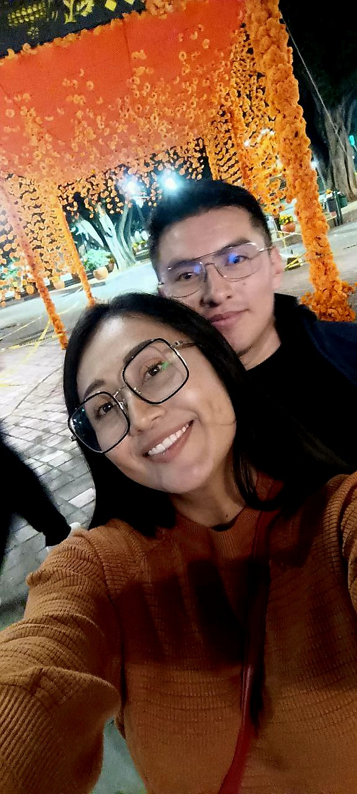
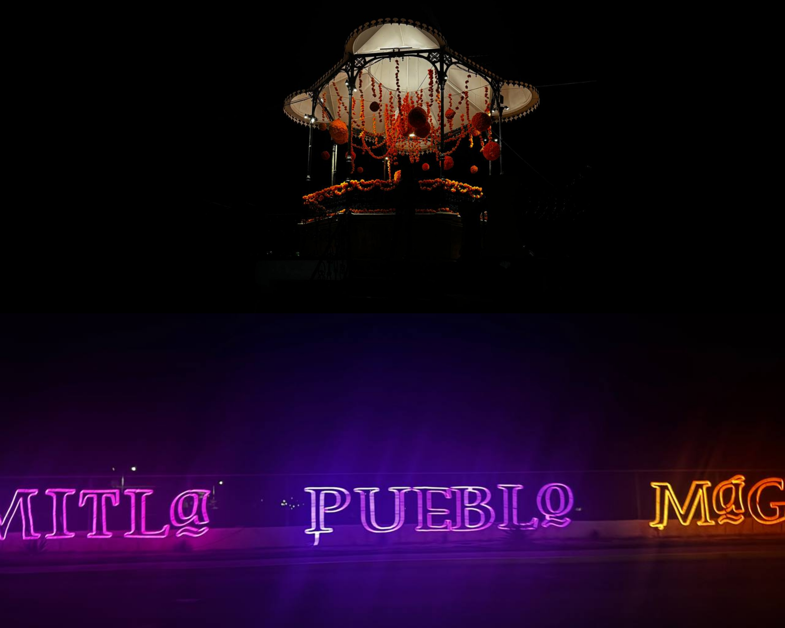

commit 0005 Date: Oct 26 2025 🟡 Night Lights 🟢 Git Message feat: spontaneous night adventure archived ⚪ Story Aquella tarde salimos rumbo a Mitla. Durante el trayecto fuimos cantando. Entre una canción y otra, el camino se hizo corto hasta que llegamos para recorrer la exposición y disfrutar de las luces que anunciaban la llegada del Día de Muertos. Más tarde regresamos al centro de Oaxaca. Nos detuvimos a comer pizza y, sin haberlo planeado, terminamos bailando con algunas de las personas que estaban ahí. Fue uno de esos momentos que simplemente suceden y se disfrutan. Después seguimos caminando por el Zócalo. A esas horas ya casi no había gente y eso nos permitió recorrerlo con calma. Los adornos de Día de Muertos hacían que todo se viera muy bonito, así que aprovechamos para tomarnos algunas fotografías y guardar ese recuerdo. Cuando nos dimos cuenta, ya era tarde. Regresamos a casa después de una noche sencilla, llena de música, risas y momentos que fueron apareciendo sin necesidad de planearlos. Con el tiempo descubrí que algunas de las mejores noches nacen de los planes más sencillos. 🟣 Developer Notes Night memories successfully committed. Spontaneous adventures make the best stories. Repository keeps evolving. 🟢 Impact on Project + First night walk archived. + New spontaneous memories created. + Friendship continued to grow. 🟢 Commit Status ✔ Completed ✔ Reviewed ✔ Ready for Release
🖼 Recuerdos

Algunas noches no necesitan grandes planes. Solo la compañía correcta y ganas de caminar.

Entre luces, risas y calles tranquilas, la noche encontró la forma de quedarse en la memoria.

Hay lugares que se recuerdan por lo que se ve… y otros por lo que se vivió en ellos.
1 / 3
⬅ Regresar al Commit History